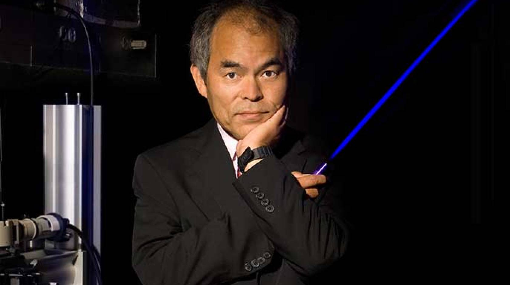
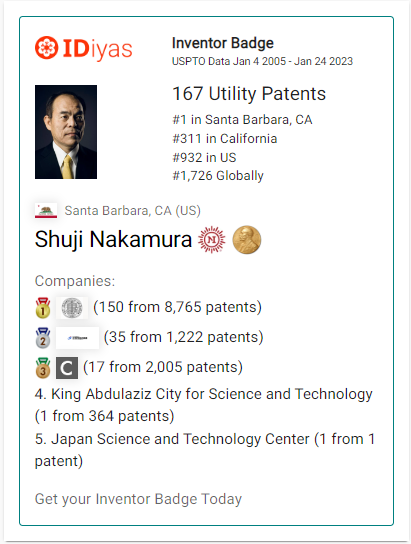

Researcher in Optoelectronics & Semiconductor Technology
Welcome to my personal page! I’m Shuji Nakamura, a researcher and inventor known for my contributions to optoelectronics and semiconductor technology. My work focuses on developing energy-efficient lighting solutions, particularly through solid-state lighting. I’m excited to share my research journey and insights with you. I am passionate about advancing the field of optoelectronics. With a background in physics and engineering, I aim to bridge theoretical research with practical applications. My most notable contributions include the invention of blue LEDs, which have transformed lighting technologies and paved the way for energy-efficient solutions worldwide.
I earned my Ph.D. in Materials Science from the University of California, Santa Barbara, in 1994. My educational background laid the foundation for my research interests in semiconductor materials and devices. During my studies, I had the opportunity to collaborate with leading experts, which significantly shaped my career.
I began my research career at UCSB, where I focused on developing light-emitting diodes (LEDs) and laser diodes. I later held positions at various institutions, including a role as a professor in the Materials Department at UCSB. My experience spans academia and industry, allowing me to contribute to significant advancements in lighting technology.
I have authored over 400 research papers. My publications cover topics such as blue LEDs, laser diodes, and their applications in energy-efficient lighting. Sharing my findings has been a key part of my mission to advance the field.In addition to my extensive research papers, I hold over 1,000 patents, many of which have significantly influenced the field of optoelectronics. My most notable patents include innovations in blue LED technology, which have enabled the development of energy-efficient lighting solutions and display technologies. Each patent represents a step forward in understanding and utilizing semiconductor materials for practical applications. Some of my patents focus on improving the efficiency and longevity of LED devices, while others explore novel materials and fabrication techniques. I have collaborated with various industry partners to translate my research into commercially viable products, bridging the gap between academia and industry. I am committed to sharing my findings and inventions with the scientific community, as I believe that collaboration fosters innovation. My work continues to inspire new research directions, and I am excited to see how these advancements will contribute to a more sustainable future. Through these patents, I aim to influence both current technologies and the next generation of optoelectronic devices.
I was awarded the Nobel Prize in Physics in 2014 for the invention of efficient blue light-emitting diodes, which have revolutionized lighting technology. Additionally, I have received numerous other accolades, including the IEEE Medal of Honor and the Nishina Memorial Prize, recognizing my contributions to semiconductor technology and energy conservation.
Throughout my career, I have led several impactful projects, including the development of high-brightness LEDs that are widely used in commercial and residential lighting. I am currently involved in projects aimed at improving the efficiency of solid-state lighting and exploring new materials to enhance device performance.
I am a member of several professional organizations, including the Institute of Electrical and Electronics Engineers (IEEE) and the Optical Society of America (OSA). These memberships provide me with opportunities to collaborate with fellow researchers and stay engaged with the latest developments in optoelectronics.
My primary research focus is on solid-state lighting, particularly the development of new materials and devices for energy-efficient lighting applications. I am dedicated to exploring innovative approaches that can lead to sustainable lighting solutions for a wide range of applications.
I have organized and participated in numerous conferences and workshops related to optoelectronics and semiconductor technology. These events include the International Conference on LED Lighting and the SPIE Photonics West, where I have had the opportunity to share my research and collaborate with other experts in the field.
I have presented my research at various national and international conferences, showcasing my work on blue LEDs and their applications. Engaging with fellow researchers during these presentations has been invaluable, allowing for the exchange of ideas and constructive feedback that helps shape future research.
Throughout my academic journey, I have completed various courses in materials science, semiconductor physics, and optoelectronics. These courses have equipped me with the knowledge and skills necessary to innovate in the field and have fueled my passion for research and development in lighting technologies.
I welcome inquiries and collaboration opportunities related to my research in optoelectronics and solid-state lighting. If you have questions, suggestions, or would like to discuss potential projects, please feel free to reach out. You can contact me via email at shuji143@gmail.com. I look forward to connecting with fellow researchers, students, and industry professionals who share a passion for advancing lighting technology and energy efficiency.